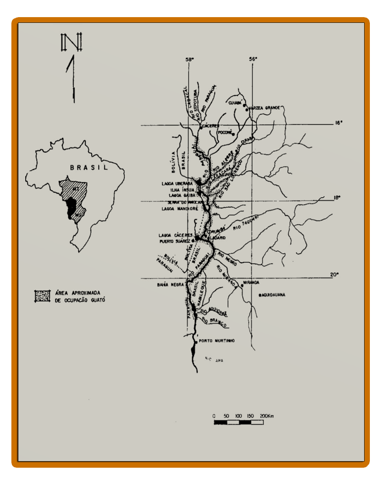

GUATÓ: DE “CANOEIRO DO PANTANAL” A “SENHORES DAS ÁGUAS”
Figura 01: Canoa Guató à beira da baía Uberaba, Ilha Ínsua, Terra Indígena Guató
Fonte: Foto de Suki Ozaki (2006) - Disponível em1. Atualidade
No que se refere aos povos indígenas Guató, o site Fundação Nacional do Índio (FUNAI) informa que, hoje existem duas áreas habitadas: Terra Indígenas Guató no Município de Corumbá do estado de Mato Grosso do Sul, composta por apenas uma aldeia indígena denominada de Aldeia Indígena Uberaba. A outra Terra Indígena Baía dos Guató que foi homologada em março de 2018, localizada junto aos rios São Lourenço e Cuiabá em áreas dos Municípios de Barão de Melgaço e Poconé.
Em recente publicação o jornalista Gil Alessi, no Site El Pais, sob o título: Guató, último povo a ter terra demarcada pode ser a primeiro a perdê-la sob Bolsonaro, que traz informações sobre os mais de 40 anos de luta dos Guató pelo reconhecimento de suas terras no estado de Mato Grosso. Sendo que no ano de 2018 conseguiram a homologação da TI dos Guató em Mato Grosso. Porém, a reportagem alerta para que este direito conquistado está sobre ameaças, pois o processo de implantação foi suspenso parcialmente por uma liminar da justiça em dezembro do mesmo ano de homologação.
Em relação à Bacia do Alto Paraguai, especificamente na região de Cáceres, a pesquisadora Costa (2015, p. 205) afirma existirem fortes vestígios de um núcleo dos povos indígenas Guató na região de Cáceres (já do período de Vila Maria e São Luiz) que pesquisas mais detalhadas podem resultar até numa regularização fundiária. Destaca que “[...] a depender de estudos de identificação territorial, acha-se o terceiro núcleo, na região de Cáceres.” (COSTA, 2015, p. 205). Esperamos que o nosso trabalho desperte o interesse de professores e alunos das escolas de Cáceres (MT) em pesquisar o “terceiro núcleo” Guató, citado por Costa (2015), para subsidiar o ensino da temática indígena na escola.
2. Aspectos Históricos e Culturais dos Guató
O estudo arqueológico inaugural de Jorge de Oliveira (1995) analisa os assentamentos e subsistência dessas indígenas áreas inundáveis do Pantanal mato-grossense. Suas pesquisas em sítios arqueológicos apontam indícios que comprovam a presença dos Guató em uma vasta área do Pantanal:
Destacam-se dessa área as seguintes extensões, comprovadamente ocupadas pelos Guató: curso principal do rio Paraguai, rio Paraguai-Mirim, rio Alegre, região do Caracará, rio São Lourenço, parte do rio Cuiabá, canal D. Pedro II, lagoas Uberaba e Guaíba, morraria dos Dourados, serra do Amolar e Ilha Ínsula. Outras grandes lagoas, como a Mandioré, Vermelha e Cáceres, também devem ter sido ocupadas pelo grupo serra do Amolar e Ilha Ínsula. (OLIVEIRA, 1995, p.101 - 102).
Esses indícios da presença de povos indígenas da etnia Guató no pantanal desde o período pré-colonial também foi analisada por Maria de Fátima Costa (1999) no seu célebre trabalho História de um país Inexistente: o Pantanal entre os séculos XVI e VVIII, quando visibiliza a construção história do termo pantanal, denominado por colonizadores espanhóis pelo nome indígena de laguna de los Xarayes. Segundo Costa (1999, p.17) os viajantes europeus, Ulrico Scgmidl e Alvar Nuñez Cabeza de Vaca em suas expedições na bacia da Platina no século XVI, foram os primeiros a noticiar a presença dos povos indígenas no pantanal.
Em publicação intitulada Guató: povo das águas, Anna Maria Ribeiro F. M. Costa (2015) também destaca a história dos Guató, um povo indígena que ficou conhecido como “[...] senhores das águas pantaneiras [...]”, sendo exímios canoeiros e o Pantanal seu habitar natural é considerado como se fosse o quintal, por isso, são considerados nômades ou seminômades, sua principal atividade era a pesca, a caça e a coleta de frutos silvestres. (COSTA, 2015, p. 204).
A partir dos das considerações de Oliveira (1996), Costa (1999) e Costa (2015), pode-se afirmar que a história dos povos indígenas Guató está ligada com as águas do Baixo Pantanal e Alto Pantanal. Assim, podemos ilustrar com um mapa da pesquisa de Oliveira (1996) esse vasto território dos povos indígenas Guató no que abrange o Pantanal de Mato Grosso e Mato Grosso do Sul:
Mapa 01: Área aproximada de ocupação Guató
Fonte: OLIVEIRA, Jorge Eremites de (1996, p. 103).
A principal caraterística cultural do povo indígena Guató era a sua relação com o rio/com as águas, tanto que eram conhecidos como “canoeiro do Pantanal”. A respeito, de não terem um local fixo (etnia nômade das águas), historicamente o Pantanal era reconhecido como a área em que, todos os seus hábitos estavam ligados e, no qual se deslocavam com facilidade e agilidade que impressionavam os viajantes. A partir da indicação do ISA (2014) é possível afirmar que o Pantanal ainda continua sendo o habitat dos Guató, mesmo com considerável redução de seus territórios e população.
Figura 02: Índio Guató, Albuquerque, Rio Paraguai, 1826. Nanquim a pena. 25,4 x 20,2 cm (Carelli, 1992, p. 48).
Fonte: Sonia Maria Couto Pereira (2008, p. 148).Dentre outras características culturais dos Guató, segundo Oliveira (1996, p. 70) é o pertencimento ao tronco linguístico dos Guató vem do Macro-Jê, Constituem-se um povo indígena, desde os tempos pré-colombianos, historicamente estabelecido na região do vasto Pantanal “povo canoeiro” conhecedores dos inúmeros cursos das águas pantaneiras, tanto que serviram de guias para os colonizadores. E, de acordo com os dados do Instituto Socioambiental do Brasil (ISA), atualmente:
[...] a língua Guató está praticamente extinta. Até o começo de 2008, havia 5 falantes no núcleo de Corumbá, mas com o falecimento de Francolina, que tinha mais de 100 anos de idade, o número ficou reduzido a quatro. Existe mais um único falante do Guató na região de São Lourenço/ Cuiabá. (ISA, 2014, s/p).
1.4 Atividades Desenvolvidas dos Povos Indígenas Guató
Oliveira (1995) destacou modo de vida dos Guató e seus os hábitos alimentares, em que esse povo utilizava o arroz-do-pantanal como base para sua subsistência, fazendo sua colheita no período da cheia do Pantanal “[...] é coletado nos campos inundados e brejos, durante a cheia. Os Guató coletam o arroz em suas próprias canoas” (OLIVEIRA,1995, p. 144). Em seguida, o arroz era posto para secar, num pilão, depois limpo e cozido para o consumo
De acordo com Jorge Oliveira (1995, p.148), há poucos relatos sobre a agricultura desenvolvida pelos Guató. Entretanto, sabe-se que cultivavam o milho, mandioca, batata, abobora, algodão e fumo em roças nos terrenos mais elevados para proteger das cheias dos rios e parte do Pantanal.
A pesca era o mais importante meio de obter a fonte alimentar de proteína dos Guató. Segundo Oliveira (1995, p.165) o consumo de peixes tradicional, na qual a pesca era atividade de maior mobilização, pois dela participava toda a família, inclusive mulheres e crianças. Para tanto, basicamente, utilizavam-se a canoa, o arco e a flecha na captura do peixe. No entanto, havia arcos e flechas específicas que usavam para a caça de animais ou a pesca como explica o autor:
[...] compreende flechas com pontas de arpão em osso ou “mats'áabaga”, especialmente destinadas à pesca. A ponta é presa numa espiga com várias farpas que é encaixada frouxamente na parte superior da vareta, e ligada à haste por uma corda de fibras de magueto (Bactris glaucescens), chamada “eits'áegeri”. Ao atingir o peixe a ponta se desprende da vareta, permanecendo presa apenas na haste que funciona como um flutuador. (OLIVEIRA, 1995, p. 159).
|
Nas pescarias, geralmente, o homem ficava em pé com o arco e a flecha para tentar apanhar o peixe, e a mulher permanecia sentada, remando na popa da canoa. Ainda, segundo Oliveira (1995, p.17), “[...] a pesca praticada em conjunto (homem e mulher) demonstra a organização social dos Guató, baseado em famílias autônomas, que viviam de forma isolada umas das outras, adaptando-se ao ecossistema pantaneiro”.
Pode-se observar nas figuras a seguir, cujo desenho de Hercule Florence (1827) retrata uma família Guató em sua canoa no Pantanal, com destaque para o desenho do remo infantil, e do remo adulto. Assim descreve Oliveira (1995): |
Figura 06: Família Guató,pintada por Florence (1825 a 1829)
Figura 07: Remo infantil e adulto dos Guató, por Schmidt, 1942
Fonte: Oliveira (1995, p. 160 e 167).|
A pesca que geralmente, o homem fica em pé com o arco e a flecha para tentar apanhar o peixe e a mulher permanece sentada, remando na popa da canoa. Ainda segundo Oliveira (1995, p.17), a pesca praticada em conjunto (homem e mulher) demonstra a organização social dos Guató, baseado em famílias autônomas, que viviam de forma isolada uma das outras, adaptando-se ao ecossistema pantaneiro.
Oliveira (1995) estudou os Guató, baseando-se nas anotações e registros feitos por viajantes como Hercule Florence. Sendo assim, o autor afirma que: |
A canoa monóxila ou manum é o principal meio de transporte para os Guató, principalmente na cheia, a tal ponto que as pernas dos homens são pouco desenvolvidas e arqueadas para dentro, enquanto o tronco permanece notadamente mais desenvolvido por causa da atividade de remar. (OLIVEIRA, 1995, p. 165).
|
Pelas imagens retratadas, podemos constatar que a confecção de artefatos indígenas, neste caso, a canoa e os remos, liga-se às situações do cotidiano. Assim, como podemos identificar as singularidades de um artefato produzido por um povo percebemos que “[...] estão vinculados à fruição estética, isto é, desfrutam de uma criação artística ímpar, que tem também o caráter de atribuição identitária ao grupo indígena criador”. (SILVA; COSTA, 2018, p. 56).
Em síntese, apresentamos como era a confecção do arco e algumas flechas dos Guató, através dos estudos Oliveira (1995) publicado em sua dissertação de - Os Argonautas Guató: aportes para o conhecimento dos assentamentos e da subsistência dos grupos que se estabeleceram nas áreas inundáveis do Pantanal Mato-grossense: |
|
|
|
Este quadro mostra um pouco a variedades de flechas utilizadas pelos Guató no seu cotidiano, cada uma delas tinha uma função específica para as atividades de caça de animais terrestres, aves e peixes no Pantanal. Assim, estas ferramentas fabricadas pelos Guató, eram fundamentais para sua sobrevivência. Conforme Melatti (1972, p.54) descreve “Para eles, a caça constitui trabalho, já que não poderiam deixar de fazê-la, se quiser ter alimentos ricos em proteínas”. Ao mesmo tempo demonstra as especificidades deste povo indígena referente aos outros povos indígenas da região do Pantanal.
|
4. A Vida Familiar e o Estilo Nômade das Águas
O viajante Francis Castelnau quando esteve com os Guató no Pantanal na Expedição às Regiões Centrais da América do Sul (1845), fez a seguinte descrição sobre os Guató “[...] um povo sem nenhum liame nacional e que nunca se concentra em povoado; cada família leva vida isolada e constrói a sua moradia nos lugares mais inacessíveis.” (CASTELNAU, 1949, p. 321).
Ainda, a exemplo da descrição de moradia dos Guató realizada por Castelnau, ou seja, caracterizada pelo abrigo provisório Guató e casa tradicional, Oliveira (1995, p. 121) destaca que os vestígios arqueológicos indicam que “ao contrário de outros grupos, o Guató não possui casa-aldeia”.
Segundo Oliveira (1995, p.123 e 124) a moradia dos Guató, é uma espécie de abrigo provisório, com construção rústica de pequenas dimensões. Eram geralmente utilizadas para pernoitar ou para passar alguns dias e depois continuar sua jornada. Assinala também que a casa tradicional Guató, pode ser classificada como simples, mas ao contrário da primeira, tem um teto do tipo duas-águas, sendo considerada um pouco mais elaborada e resistente por ter uma estrutura mais sólida.
Nas ilustrações da figura 04, podemos observar os desenhos de moradias dos Guató retratado por Hércules Florence (1948) quando esteve em contato com os Guató ao adentrar nas águas do Pantanal:
|
|
|
Oliveira (1995, p.127) também expõe através dos relatos do viajante Florence (1977) e cronista Koslowsky (1895) e as pesquisas arqueológicas, que os Guató têm poucos utensílios domésticos dentro da sua residência. Isso facilitaria o transporte dos seus pertences na canoa em qualquer momento e lugar, permitindo assim uma grande mobilidade fluvial.
As pesquisas bibliográficas citadas apontam que as famílias Guató eram consideradas patrilineares, sendo permitida a poligamia, pois os homens poderiam ter várias mulheres para compor sua família. Geralmente, eles tinham de duas ou três mulheres e para ter este direito, passavam por um ritual de passagem da adolescência para a vida adulta. Nesse ritual, os homens eram obrigados a caçar onças. A cada onça caçada, dava o direito de ter uma esposa, e ser um indicativo de coragem que inspirava prestígio e respeito perante aquela sociedade. Por fim, como dissemos no início do subtítulo, os Guató são exímios canoeiros, sendo descritos pelos viajantes como indígenas que passavam boa parte do tempo em cima de uma canoa, fazendo quase tudo sob ela, inclusive dormiam. Oliveira (1995) em seus estudos realizados nas anotações de viajantes, como Hercule Florence, afirma que: |
A canoa monóxila ou manum é o principal meio de transporte para os Guató, principalmente na cheia, a tal ponto que as pernas dos homens são pouco desenvolvidas e arqueadas para dentro, enquanto o tronco permanece notadamente mais desenvolvido por causa da atividade de remar. (OLIVEIRA, 1995, p. 165).
|
Pode-se constatar que desde as primeiras notícias dos Guató, estão ligadas a canoa e sua habilidade de conduzi-la nas águas do Pantanal. Por isso, os colonizadores constantemente recorriam aos Guató, considerados notáveis navegadores. Não somente para serem guias em viagens pelo Pantanal, mas também faziam encomendas e compravam as canoas fabricadas por esses indígenas, considerados eficientes para o transporte de pessoas e de mercadoria na época de cheias do Pantanal.
|
Figura 05: Guató em duas canoas (FLORENCE, 1977, p. 115). |
Por Luciana Martinez de Oliveira Costa.
COSTA, Luciana Martinez de Oliveira. A Presença de Povos Indígenas Chiquitano, Bororo, Guató e Guaná em Vila Maria do Paraguai e São Luiz de Cáceres (1778-1874): Uma Abordagem de Temática Indígena Na Educação Básica. Cáceres, 2020. Dissertação (Mestrado Profissional ProfHistória), Unemat.
Link da dissertação completa
5. REFERÊNCIAS BIBLIOGRÁFICAS
ALESSI, Gil. Guató, Último Povo a ter Terra Demarcada Pode ser Primeiro a Perdê-la sob Bolsonaro. El País. São Paulo, 14 de Jan. 2019. Disponível em: Brasil.elpais.com
CASTELNAU, Francis. Expedição às Regiões Centrais da América do Sul. Trad. São Paulo: Companhia Editora Nacional. 1949, 2 vls.
COSTA, Anna Maria Ribeiro F. M. Guató: Povo das Águas. In_____; CHAMORRO, Graciela e COMBÈS, Isabelle. (Org) Povos Indígenas em Mato grosso do sul - História, cultura e transformações sociais. Dourado Dourados, Ed. UFGD, 2015.
FLORENCE, Hércules. Viagem do Tietê ao Amazonas de 1825 a 1829. Trad. Editora Cultrix, Universidade de São Paulo, 1977.
FUNAI. Terras indígenas. Disponível em funai.gov.br. Acesso em 09 de Mar. 2020.
OLIVEIRA, Jorge Eremites. Os Argonautas Guató: aportes para o conhecimento dos assentamentos e da subsistência dos grupos que se estabeleceram nas áreas inundáveis do Pantanal Matogrossense. Porto Alegre, RS. 1995. Dissertação (Mestrado em História), PUCRS.
PEREIRA, Sonia Maria Couto. Etnografia e Iconografia nos Registros Produzidos Por Hércules Florence Durante a Expedição Langsdorff na Província do Mato Grosso (1826-1829). Dourados, MS. 2008. Dissertação (Mestrado em História) Universidade Federal da Grande Dourados.
SERPA, Paulo. Povos Indígenas no Brasil: Guató. ISA – Instituto Socioambiental. São Paulo, 2014. Disponível em pib.socioambiental. Acesso Acesso em fev/2020.